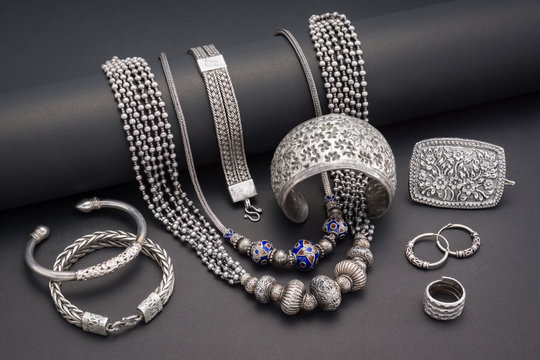
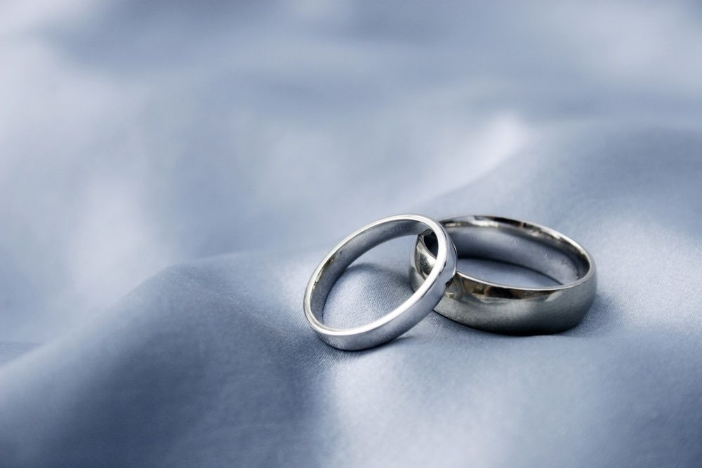

Gold jewelry has been cherished for centuries, not only for its aesthetic appeal but also for its intrinsic value and cultural significance. Gold, being one of the most malleable and ductile metals, allows artisans to create intricate and elaborate designs, making it a preferred choice for jewelry across various civilizations. From ancient Egyptian pharaohs adorned with gold ornaments symbolizing divine status to the Indian subcontinent, where gold jewelry plays an integral role in weddings and other significant life events, the allure of gold has remained timeless. In India, gold is often considered a symbol of wealth, prosperity, and auspiciousness, making it an essential part of traditional ceremonies. The artistry behind gold jewelry lies not only in its design but also in the craftsmanship, which involves a series of meticulous processes such as molding, engraving, and embedding precious stones, giving each piece a unique character. Over the years, gold jewelry has evolved with changing trends and tastes, moving from traditional styles like bangles, necklaces, and earrings to more contemporary designs that reflect modern fashion sensibilities. With the rising demand for personalized and customized jewelry, many artisans and jewelers now offer bespoke services, creating pieces that resonate with an individual’s personality, style, and occasion. Furthermore, the blend of gold with other metals like silver, platinum, and copper, as well as the use of gemstones like diamonds, rubies, and emeralds, enhances the beauty and versatility of gold jewelry, catering to diverse preferences. White gold, a popular alternative to yellow gold, has gained significant traction, especially in modern bridal collections, as it offers a chic, sophisticated look while maintaining the elegance of gold. One of the standout features of gold jewelry is its investment value. Gold is a globally recognized asset, and its value often rises in times of economic uncertainty, making gold jewelry a practical investment for many. Families pass down gold ornaments through generations, not just as a symbol of heritage but also as a secure financial asset. The versatility of gold in different carats, from 24K (pure gold) to 22K and 18K, also offers flexibility in its use for both investment and ornamental purposes. While 24K gold is too soft for everyday wear, lower carats, mixed with other metals, provide durability and strength without compromising on the lustrous appearance of gold. In recent years, sustainable and ethical sourcing of gold has become a growing concern. Many consumers are now aware of the environmental and social impacts of gold mining, leading to a rise in demand for ethically sourced or recycled gold jewelry. Jewelers are increasingly adopting practices that ensure fair labor standards and minimize environmental damage, providing eco-conscious consumers with options that align with their values. Moreover, technological advancements, such as 3D printing and laser engraving, have revolutionized the way gold jewelry is designed and manufactured, offering more precision and allowing for more intricate patterns.
Silver jewelry has been cherished for centuries for its versatility, aesthetic appeal, and affordability compared to other precious metals. What makes silver particularly attractive to jewelry makers and wearers alike is its inherent malleability, allowing artisans to craft intricate designs that cater to a wide array of tastes. The most common type used in jewelry making is sterling silver, composed of 92.5% silver and 7.5% other metals, often copper, which enhances durability without compromising the metal’s luster. This alloy balances softness for artisans to shape and mold, while ensuring the finished product withstands wear over time. One of the unique properties of silver jewelry is its hypoallergenic nature, making it an ideal choice for people with sensitive skin who might react to nickel or other metals. This feature, along with silver’s antimicrobial properties, adds to its appeal in the global market, especially as consumers become more health-conscious. Silver jewelry can easily complement a variety of gemstones, from the subtlety of pearls to the vibrancy of turquoise, enhancing its versatility and timeless appeal. The growing interest in personalized and custom jewelry has spurred demand for silver pieces, as it’s a perfect medium for engraving or setting stones to create bespoke items. Silver’s reflective nature also makes it popular for statement pieces, as it catches light beautifully, enhancing the intricacies of design, whether in minimalist pieces or more ornate creations. In recent years, we have seen a resurgence of interest in vintage and handcrafted silver jewelry, partly driven by sustainable fashion trends. Many people now seek out handcrafted, ethically sourced silver jewelry to minimize their environmental impact and support small-scale artisans. Silver, being recyclable and widely available, aligns well with the growing eco-conscious movement. Caring for silver jewelry, however, requires some attention due to its tendency to tarnish when exposed to air and moisture. This tarnishing results from the reaction between silver and sulfur compounds in the air, forming silver sulfide on the surface. While not permanent, tarnish can dull the metal’s luster, but regular polishing with a soft cloth and storing pieces in anti-tarnish bags or environments can mitigate this. Innovations in jewelry manufacturing, such as rhodium plating, help protect silver from tarnishing, preserving its brilliance longer. Moreover, silver jewelry continues to hold cultural significance in many societies, representing wealth, status, and spiritual protection. In India, for example, silver anklets and toe rings are often worn for traditional purposes, while in Mexico, the art of silversmithing is deeply rooted in the cultural heritage of cities like Taxco. In the digital age, silver jewelry is also experiencing a boost in popularity through online platforms, where consumers have access to a global marketplace that offers a range of unique and contemporary designs.
Diamond jewelry is renowned for its timeless elegance and luxurious appeal, making it one of the most cherished forms of adornment throughout history. The process of creating diamond jewelry is a delicate combination of artistry and science, beginning with the sourcing of raw diamonds from mines around the world, such as those in South Africa, Russia, and Canada. These diamonds, formed deep within the Earth under extreme pressure and heat, are then cut and polished to reveal their radiant brilliance. Diamond cutting is an intricate process, requiring precise skill to enhance the stone's natural sparkle through facets that reflect and refract light. The quality of a diamond is assessed based on the Four Cs: Cut, Clarity, Color, and Carat weight. Each of these factors contributes to the value of the stone, with flawless, colorless, and expertly cut diamonds being the most sought-after. Once the diamond is prepared, it becomes the centerpiece of a design that reflects both current trends and timeless styles. Designers draw inspiration from a variety of sources, including nature, geometry, and culture, to create unique and beautiful settings that showcase the diamond. Whether it's set in platinum, gold, or silver, the metal choice complements the diamond’s brilliance while adding its own element of luxury. The setting of the diamond, such as a classic solitaire, halo, or pavé style, plays a crucial role in enhancing its beauty and ensuring that the piece suits the wearer’s personality and lifestyle. Diamond jewelry comes in many forms, including rings, necklaces, earrings, bracelets, and more. Each piece can hold personal significance or mark important life milestones, such as engagements, weddings, anniversaries, or birthdays. Engagement rings, for example, are often the most iconic diamond pieces, symbolizing love and commitment. Over the years, styles have evolved, but the classic diamond solitaire remains an enduring favorite. Bespoke or customized diamond jewelry is becoming increasingly popular, as more individuals seek unique pieces that reflect their personal style and story. Sustainability and ethical sourcing have become significant considerations in the diamond industry in recent years. Consumers are increasingly aware of the environmental and social impact of diamond mining. This has led to the rise of lab-grown diamonds, which offer a sustainable and more affordable alternative without compromising on quality. Lab-grown diamonds are chemically identical to natural diamonds and are produced using advanced technology that mimics the conditions in which natural diamonds form. They have the same optical properties and brilliance as their mined counterparts, making them a compelling option for modern buyers. Diamond jewelry remains a symbol of wealth, beauty, and love. Whether chosen for its aesthetic allure or the emotional significance it holds, a well-crafted diamond piece is a treasured possession that can be passed down through generations. Its enduring value and allure make diamond jewelry one of the most coveted forms of personal adornment.
Platinum jewelry is renowned for its durability, rarity, and timeless appeal, making it one of the most sought-after metals for fine jewelry. As one of the densest and heaviest precious metals, platinum is incredibly durable, resistant to tarnish, and hypoallergenic, making it ideal for people with sensitive skin. Unlike gold, platinum is naturally white and doesn’t require plating to maintain its bright sheen, giving it a long-lasting and authentic luster. This makes platinum a favorite choice for engagement rings, wedding bands, and heirloom pieces, as it symbolizes strength and endurance, much like the love and relationships it often represents. Mining and refining platinum is a complex and expensive process due to its rarity. Found mainly in South Africa, Russia, and Canada, platinum is about thirty times rarer than gold, which adds to its allure and exclusivity. It takes approximately 10 tons of ore to produce a single ounce of platinum, contributing to its high price. The process of creating platinum jewelry involves skilled craftsmanship because of its density and strength. Platinum’s malleability allows it to be shaped into intricate designs without breaking, while its durability ensures that stones, such as diamonds, are securely held in place for decades. Platinum’s rarity and purity often come with a sense of prestige, and its weight gives a luxurious feel when worn. Many jewelers offer platinum in its purest form, often around 95% purity, compared to 18K gold, which is only 75% pure. This high level of purity adds to the hypoallergenic properties and gives the metal a heavier, more substantial feel compared to other materials. Caring for platinum jewelry is relatively easy. Although platinum is durable, over time, it develops a patina, which some people appreciate for its antique appearance. However, this can be polished away if the wearer prefers the original shine. Despite its hardness, platinum can still scratch, but unlike other metals, when it does, the metal is displaced rather than lost, meaning the jewelry retains its volume. Platinum has also made its mark in popular culture, often symbolizing exclusivity, luxury, and longevity. It is frequently seen adorning celebrities at high-profile events like the Oscars or worn by royalty, further cementing its status as the ultimate precious metal. Its association with love, commitment, and long-lasting beauty makes platinum a top choice for those who seek high-quality jewelry that will last a lifetime. In addition to its aesthetic appeal, platinum is valued for its versatility. It pairs beautifully with other metals and stones, allowing for a range of design possibilities from modern, minimalist pieces to more intricate, vintage-inspired designs. Its neutrality complements gemstones like diamonds, sapphires, and emeralds, enhancing their natural beauty.
